<html>
<head>
<title>Shaodi YOU - Publications</title>
<meta http-equiv="Content-Type" content="text/html; charset=Helvetica">

<style type="text/css">
p {
	font-family: Arial, Helvetica, sans-serif;
	font-size: 16px;
}
.STYLE3 {font-size: 24px}
</style>
</head>
<body bgcolor="#FFFFFF" leftmargin="0" topmargin="0" marginwidth="0" marginheight="0">
<!-- Save for Web Slices (Untitled-1.psd) -->
<table width="840" height="768" border="0" align="center" cellpadding="0" cellspacing="0" id="Table_01">
	<tr>
		<td colspan="6">
			</td>
	</tr>
	<tr>
		<td rowspan="4" width="20" background="../images/index_02.gif">&nbsp;</td>
		<td width="175" height="53" style="table-layout:fixed>
			<a href="index.html"><a href="../index.html"></a></a></td>
		<td rowspan="4" width="65" background="../images/index_12.gif">&nbsp;</td>
		<td width="520" rowspan="4" valign="top"><p align="justify" class="STYLE3">Perception Based Vision and Machine Learning </p>
		  <p align="justify">Perceptual based vision aiming to  model and understanding human perception. And later propose computer vision and  machine learning algorithms which incorporates such understanding. Specifically,  I have been working on the topics: Prothetic vision, decolourization, saliency  and manifold learning.</p>
		  <p class="STYLE3">&nbsp;</p>
		  <p class="STYLE3">Classification-Reconstruction Learning for Open-Set Recognition </p>
		  <p>Appeared in CVPR2019</p>
		  <p>Ryota Yoshihashi, Wen Shao, Rei Kawakami,<strong> Shaodi You</strong>, Makoto Iida and Takeshi Naemura </p>
		  <p class="STYLE3">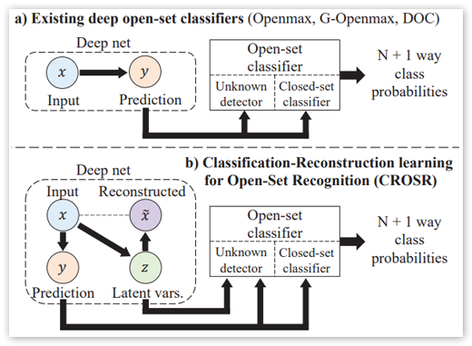</p>
		  <p align="justify">Open-set classification is a problem of handling ‘unknown’ classes that are not contained in the training  dataset, whereas traditional classifiers assume that only  known classes appear in the test environment. Existing open-set classifiers rely on deep networks trained in  a supervised manner on known classes in the training  set; this causes specialization of learned representations  to known classes and makes it hard to distinguish unknowns from knowns. In contrast, we train networks  for joint classification and reconstruction of input data.  This enhances the learned representation so as to preserve information useful for separating unknowns from  knowns, as well as to discriminate classes of knowns. Our  novel Classification-Reconstruction learning for Open-Set  Recognition (CROSR) utilizes latent representations for reconstruction and enables robust unknown detection without  harming the known-class classification accuracy. Extensive experiments reveal that the proposed method outperforms existing deep open-set classifiers in multiple standard  datasets and is robust to diverse outliers.</p>
		  <p><a href="http://openaccess.thecvf.com/content_CVPR_2019/papers/Yoshihashi_Classification-Reconstruction_Learning_for_Open-Set_Recognition_CVPR_2019_paper.pdf" target="_blank">Paper</a></p>
		  <p class="STYLE3">&nbsp;</p>
		  <p align="justify" class="STYLE3">Deep Texture and Structure Aware Filtering 
		    Network for Image Smoothing</p>
		  <p align="justify">Appeared in ECCV2018 </p>
		  <p align="justify">Kaiyue Lu, <strong>Shaodi You</strong> and Nick Barnes </p>
		  <p align="justify">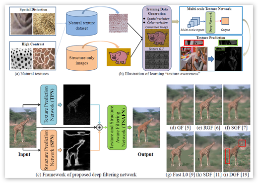</p>
		  <p align="justify">Image smoothing is a fundamental task in computer vision, 
		    that aims to retain salient structures and remove insignicant textures. 
		    In this paper, we aim to address the fundamental shortcomings of existing 
		    image smoothing methods, which cannot properly distinguish textures 
		    and structures with similar low-level appearance. While deep learning 
		    approaches have started to explore the preservation of structure through 
		    image smoothing, existing work does not yet properly address textures. 
		    To this end, we generate a large dataset by blending natural textures with 
		    clean structure-only images, and then build a texture prediction network 
		    (TPN) that predicts the location and magnitude of textures. We then 
		    combine the TPN with a semantic structure prediction network (SPN) 
		    so that the nal texture and structure aware ltering network (TSAFN) 
		    is able to identify the textures to remove (\texture-awareness&quot;) and the 
		    structures to preserve (\structure-awareness&quot;). The proposed model is 
		    easy to understand and implement, and shows excellent performance on 
		    real images in the wild as well as our generated dataset.</p>
		  <p align="justify">Paper<br>
		    Webpage</p>
		  <p class="STYLE3">&nbsp;</p>
		  <p class="STYLE3">&nbsp;</p>
		  <p class="STYLE3">Weakly-Supervised Semantic Segmentation by Iteratively Mining 
	      Common Object Features</p>
		  <p>Appeared in CVPR2018</p>
		  <p>Xiang Wang, <strong>Shaodi You</strong>, Huimin Ma and Xi Li </p>
		  <p class="STYLE3">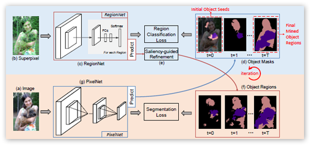</p>
		  <p align="justify">Weakly-supervised semantic segmentation under imagelevel 
		    supervision is a challenging task as it directly associates 
		    high-level semantic to low-level appearance. To 
		    bridge this gap, in this paper, we propose an iterative<br>
		    bottom-up and top-down framework which alternatively expands 
		    object regions and optimizes segmentation network. 
		    We start from initial localization produced by classification 
		    networks. While classification networks are only responsive 
		    to small and coarse discriminative object regions, we 
		    argue that, these regions contain significant common features 
		    about objects. So in the bottom-up step, we mine 
		    common object features from the initial localization and expand 
		    object regions with the mined features. To supplement 
		    non-discriminative regions, saliency maps are then 
		    considered under Bayesian framework to refine the object 
		    regions. Then in the top-down step, the refined object regions 
		    are used as supervision to train the segmentation 
		    network and to predict object masks. These object masks 
		    provide more accurate localization and contain more regions 
		    of object. Further, we take these object masks as 
		    initial localization and mine common object features from 
		    them. These processes are conducted iteratively to progressively 
		    produce fine object masks and optimize segmentation 
		    networks. Our method achieves 60.3% and 61.2% mean 
		    Intersection-over-Union (mIoU) on PASCAL VOC 2012 val 
		    and test sets, which outperforms previous state-of-the-art 
	      method by 5.3% and 5.5%, respectively.</p>
		  <p align="justify">Paper<br>
		  Webpage</p>
		  <p align="justify">&nbsp;</p>
		  <p align="justify">&nbsp;</p>
		  <p class="STYLE3">&nbsp;</p>
		  <p class="STYLE3">A  Frequency Domain Neural Network for Fast Image Super-resolution</p>
		  <p>Appeared in IJCNN2018</p>
		  <p>Junxuan Li, <strong>Shaodi You</strong> and Antonio Robles-Kelly  </p>
		  <p class="STYLE3"></p>
		  <p align="justify">We present a frequency domain neural 
		    network for image super-resolution. The network employs the 
		    convolution theorem so as to cast convolutions in the spatial 
		    domain as products in the frequency domain. Moreover, the 
		    non-linearity in deep nets, often achieved by a rectifier unit,<br>
		    is here cast as a convolution in the frequency domain. This not 
		    only yields a network which is very computationally efficient 
		    at testing, but also one whose parameters can all be learnt 
		    accordingly. The network can be trained using back propagation 
		    and is devoid of complex numbers due to the use of the Hartley 
		    transform as an alternative to the Fourier transform. Moreover, 
		    the network is potentially applicable to other problems elsewhere 
		    in computer vision and image processing which are often cast 
		    in the frequency domain. We show results on super-resolution 
		    and compare against alternatives elsewhere in the literature. In 
		    our experiments, our network is one to two orders of magnitude 
	      faster than the alternatives with a marginal loss of performance.</p>
		  <p>Paper <br> Webpage</p>
		  <p class="STYLE3">&nbsp;</p>
		  <p class="STYLE3">&nbsp;</p>
		  <p class="STYLE3">Semi-supervised and Weakly-supervised Road  Detection based on Generative Adversarial Networks</p>
		  <p>Appeared in IEEE Signal Processing Letters</p>
		  <p>Xiaofeng Han , Jianfeng Lu , Chunxia Zhao, <strong>Shaodi You</strong> , and Hongdong Li</p>
		  <p>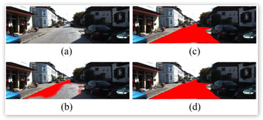</p>
		  <p align="justify">Road detection is a key component of autonomous 
		    driving; however, most fully supervised learning road detection 
		    methods suffer from either insufficient training data or high costs 
		    of manual annotation. To overcome these problems, we propose 
		    a semisupervised learning (SSL) road detection method based on 
		    generative adversarial networks (GANs) and a weakly supervised 
		    learning (WSL)method based on conditionalGANs. Specifically, in 
		    our SSL method, the generator generates the road detection results 
		    of labeled and unlabeled images, and then they are fed into the discriminator, 
		    which assigns a label on each input to judge whether it 
		    is labeled. Additionally, inWSL method we add another network to 
		    predict road shapes of input images and use them in both generator 
		    and discriminator to constrain the learning progress. By training 
		    under these frameworks, the discriminators can guide a latent annotation 
		    process on the unlabeled data; therefore, the networks can 
		    learn better representations of road areas and leverage the feature 
		    distributions on both labeled and unlabeled data. The experiments 
		    are carried out on KITTI ROAD benchmark, and the results show 
	      our methods achieve the state-of-the-art performances.</p>
		  <p><a href="../Downloads/XiaoFeng_SPL2018.pdf" target="_blank">Paper</a></p>
		  <p>&nbsp;</p>
		  <p class="STYLE3">&nbsp;</p>
		  <p class="STYLE3">Single Image Action Recognition using Semantic Body Part Actions</p>
		  <p>Appeared in ICCV 2017</p>
		  <p>Zhichen Zhao, Huimin Ma, <strong>Shaodi You</u> </strong>
		  <p class="STYLE3">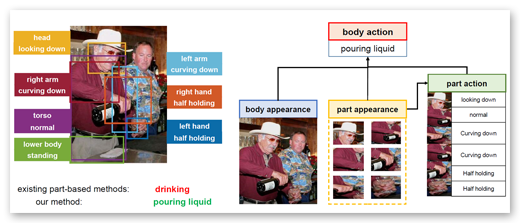</p>
		  <p align="justify">In this paper, we propose a novel single image action 
		    recognition algorithm based on the idea of semantic part 
		    actions. Unlike existing part-based methods, we argue that 
		    there exists a mid-level semantic, the semantic part action; 
		    and human action is a combination of semantic part actions<br>
		    and context cues. In detail, we divide human body into 
		    seven parts: head, torso, arms, hands and lower body. For 
		    each of them, we define a few semantic part actions (e.g. 
		    head: laughing). Finally, we exploit these part actions to 
		    infer the entire body action (e.g. applauding). To make the<br>
		    proposed idea practical, we propose a deep network-based 
		    framework which consists of two subnetworks, one for part 
		    localization and the other for action prediction. The action 
		    prediction network jointly learns part-level and body-level 
		    action semantics and combines them for the final decision. 
		    Extensive experiments demonstrate our proposal on semantic 
		    part actions as elements for entire body action. Our 
		    method reaches mAP of 93.9% and 91.2% on PASCAL VOC 
		    2012 and Stanford-40, which outperforms the state-of-theart 
	      by 2.3% and 8.6%.</p>
		  <p><a href="../Downloads/ShaodiYOU_ICCV2017.pdf" target="_blank">Paper</a> (3.5MB) <br>
            <a href="https://github.com/ZhichenZhao/part-action-network" target="_blank">Webpage</a></p>
		  <p>&nbsp;</p>
		  <p>&nbsp;</p>
		  <p align="justify" class="STYLE3">Edge Preserving and Multi-Scale Contextual Neural 
	      Network for Salient Object Detection</p>
		  <p align="justify">Appeared in TIP 2017 </p>
		  <p align="justify">Xiang Wang, Huimin Ma, <strong>Shaodi You</strong> and Xiaozhi Chen </p>
		  <p>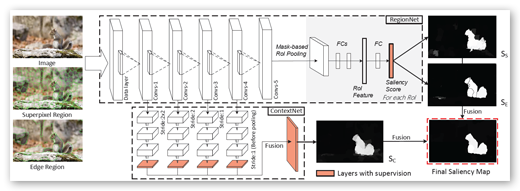</p>
		  <p align="justify">We propose a novel edge preserving 
		    and multi-scale contextual neural network for salient object 
		    detection. The proposed framework is aiming to address two 
		    limits of the existing CNN based methods. First, region-based<br>
		    CNN methods lack sufficient context to accurately locate salient 
		    object since they deal with each region independently. Second, 
		    pixel-based CNN methods suffer from blurry boundaries due 
		    to the presence of convolutional and pooling layers. Motivated 
		    by these, we first propose an end-to-end edge-preserved neural 
		    network based on Fast R-CNN framework (named RegionNet) to 
		    efficiently generate saliency map with sharp object boundaries. 
		    Later, to further improve it, multi-scale spatial context is attached 
		    to RegionNet to consider the relationship between regions and the 
		    global scenes. Furthermore, our method can be generally applied 
		    to RGB-D saliency detection by depth refinement. The proposed<br>
		    framework achieves both clear detection boundary and multiscale 
		    contextual robustness simultaneously for the first time, and 
		    thus achieves an optimized performance. Experiments on six 
		    RGB and two RGB-D benchmark datasets demonstrate that the 
	      proposed method achieves state-of-the-art performance.</p>
		  <p align="justify"><a href="../Downloads/Xiang_TIP2017.pdf" target="_blank">pdf</a> (4.9MB) </p>
		  <p class="STYLE3">&nbsp;</p>
		  <p class="STYLE3">Local Background Enclosure for RGB-D Salient Object Detection</p>
		  <p>Appeared in CVPR 2016, Spotlight presentation </p>
		  <p>David Fung, Nick Barnes, <strong>Shaodi You</strong>,  Chris McCarthy, </p>
		  <p></p>
		  <p align="justify">Recent work in salient object detection has considered 
		    the incorporation of depth cues from RGB-D images. In 
		    most cases, absolute depth, or depth contrast is used as 
		    the main feature. However, regions of high contrast in 
		    background regions cause false positives for such methods, 
		    as the background frequently contains regions that are 
		    highly variable in depth. Here, we propose a novel RGB-D 
		    saliency feature. Local background enclosure captures the 
		    spread of angular directions which are background with respect 
		    to the candidate region and the object that it is part 
		    of. We show that our feature improves over state-of-the-art 
		    RGB-D saliency approaches as well as RGB methods on the 
		    RGBD1000 and NJUS2000 datasets.</p>
		  <p align="justify"><a href="../Downloads/David_Saliency_CVPR16.pdf">Paper</a><br>
	      <a href="http://users.cecs.anu.edu.au/~u4673113/lbe.html" target="_blank">Webpage</a></p>
		  <p class="STYLE3">&nbsp;</p>
		  <p class="STYLE3">Perceptually Consistent Color-to-Gray Image Conversion</p>
		  <p><strong>Shaodi You</strong>, Nick Barnes and Janine Walker </p>
		  <p class="STYLE3">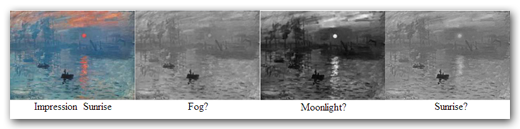</p>
		  <p align="justify">We propose a color to grayscale image conversion algorithm (C2G) that aims to preserve the perceptual properties of the color image as much as possible. To this end, we propose measures for two perceptual properties based on contemporary research in vision science: brightness and multi-scale contrast. The brightness measurement is based on the idea that the brightness of a grayscale image will affect the perception of the probability of color information. The color contrast measurement is based on the idea that the contrast of a given pixel to its surroundings can be measured as a linear combination of color contrast at different scales. Based on these measures we propose a graph based optimization framework to balance the brightness and contrast measurements. To solve the optimization, an L1-norm based method is provided which converts color discontinuities to brightness discontinuities. To validate our methods, we evaluate against the existing cadik and Color250 datasets, and against NeoColor, a new dataset that improves over existing C2G datasets. NeoColor contains around 300 images from typical C2G scenarios, including: commercial photograph, printing, books, magazines, masterpiece artworks and computer designed graphics. We show improvements in metrics of performance, and further through a user study, we validate the performance of both the algorithm and the metric.	      </p>
		  <p><a href="../Downloads/ShaodiYOU_C2G.pdf">Paper</a></p>
		  <p class="STYLE3">&nbsp;</p>
		  <p class="STYLE3">Learning RGB-D Salient Object Detection using background enclosure, depth contrast, and top-down features</p>
		  <p>Appeared in ICCV Workshop on Mutual Benefit of Cognitive and Computer Vision, 2017</p>
		  <p>Riku Shigematsu, David Feng, <strong>Shaodi You</strong> and Nick Barnes </p>
		  <p class="STYLE3">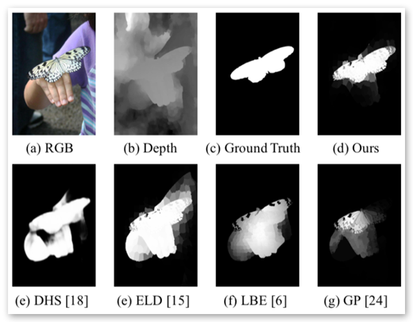</p>
		  <p align="justify">In human visual saliency, top-down and bottom-up information are ombined as a basis of visual attention. Recently, deep Convolutional Neural etworks (CNN) have demonstrated strong performance on RGB salient object detection, providing an effective mechanism for combining top-down semantic information with low level features. Although depth information has been shown to be important for human perception of salient objects, the use of top-down information and the exploration of CNNs for RGB-D salient object detection remains limited. 
	      Here we propose a novel deep CNN architecture for RGB-D salient object detection that utilizes both top-down and bottom-up cues. In order to produce such an architecture, we present novel depth features that capture the ideas of background enclosure, depth contrast and histogram distance in a manner that is suitable for a learned approach. We show improved results compared to state-of-the-art RGB-D salient object detection methods. We also show that the low-level and mid-level depth features both contribute to improvements in results. In particular, the F-Score of our method is 0.848 on RGBD1000, which is 10.7% better than the current best.</p>
		  <p align="justify"><a href="../Downloads/ShaodiYOU_MBCC2017.pdf" target="_blank">Paper</a> (2.1MB) <br>
		  Webpage</p>
		  <p class="STYLE3">&nbsp;</p>
		  <p class="STYLE3">DSD: Depth Structural Descriptor for Edge-Based Assistive Navigation</p>
		  <p>Appeared in ICCV Workshop on Assistive Computer Vision and Robotics</p>
		  <p>David Feng, <strong>Shaodi You</strong> and Nick Barnes</p>
		  <p>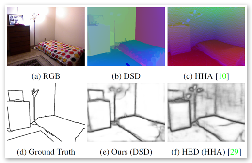</p>
		  <p align="justify">Structural edge detection is the task of finding edges between 
		    significant surfaces in a scene. This can underpin 
		    many computer vision tasks such as sketch recognition and 
		    3D scene understanding, and is important for conveying 
		    scene structure for navigation with assistive vision. Identifying 
		    structural edges from a depth image can be challenging 
		    because surface structure that differentiates edges is not 
		    well represented in this format. We derive a depth input encoding, 
		    the Depth Surface Descriptor (DSD), that captures 
		    the first order properties of surfaces, allowing for improved 
		    classification of surface geometry that corresponds to structural 
		    edges. We apply the DSD feature to salient edge detection 
		    on RGB-D images using a fully convolutional neural 
		    network with deep supervision. We evaluate our method 
		    on both a new RGB-D dataset containing prosthetic vision 
		    scenarios, and the SUNRGBD dataset, and show that our 
		    approach produces improved performance compared to existing 
		    methods by 4%.</p>
		  <p><a href="../Downloads/ShaodiYOU_ACVR2017.pdf" target="_blank">Paper</a> (10.2MB) <br>
	      Webpage</p>
		  <p></p>
		  <p></p>
		  <p></p>
		  <p></p>
		  <p class="STYLE3">HOSO: Histogram Of Surface Orientation for<br>
	      RGB-D Salient Object Detection</p>
		  <p>Appeared in The International Conference on Digital Image Computing: Techniques and  Applications, DICTA 2017</p>
		  <p><strong>Best Paper Award </strong></p>
		  <p>David Feng, Nick Barnes and <strong>Shaodi You </strong></p>
		  <p class="STYLE3">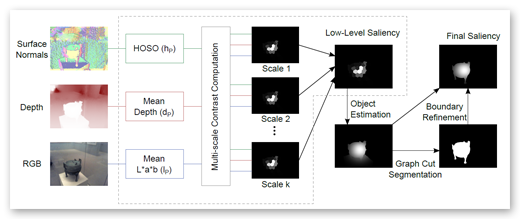</p>
		  <p align="justify">Salient object detection using RGB-D data is an 
		    emerging field in computer vision. Salient regions are often 
		    characterized by an unusual surface orientation profile with 
		    respect to the surroundings. To capture such profile, we introduce 
		    the histogram of surface orientation (HOSO) feature 
		    to measure surface orientation distribution contrast for RGB-D 
		    saliency. We propose a new unified model that integrates surface 
		    orientation distribution contrast with depth and color contrast 
		    across multiple scales. This model is implemented in a multistage 
		    saliency computation approach that performs contrast 
		    estimation using a kernel density estimator (KDE), estimates 
		    object positions from the low-level saliency map, and finally 
		    refines the estimated object positions with a graph cut based 
		    approach. Our method is evaluated on two RGB-D salient object 
		    detection databases, achieving superior performance to previous 
	      state-of-the-art methods.</p>
		  <p align="justify"><a href="../Downloads/DavidFENG_DICTA2017.pdf" target="_blank">Paper</a> (6.2MB) </p>
		  <p class="STYLE3"></p>
		  <p class="STYLE3"></p>
		  <p class="STYLE3"></p>
		  <p class="STYLE3">Double-Guided Filtering: Image Smoothing with Structure and Texture  Guidance</p>
		  <p>Appeared in The International Conference on Digital Image Computing: Techniques and  Applications, DICTA 2017</p>
		  <p>Kaiyue Lu, <strong>Shaodi You</strong>, Nick Barnes</p>
		  <p class="STYLE3">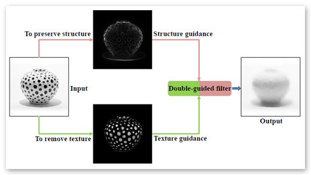</p>
		  <p align="justify">Image smoothing is a fundamental technology which aims to preserve image structure and remove insignificant texture. Balancing the trade-off between preserving structure and suppressing texture, however, is not a trivial task. 
	      This is because existing methods rely on only one guidance to infer structure or texture and assume the other is dependent. However, in many cases, textures are composed of repetitive structures and difficult to be distinguished by only one guidance. In this paper, we aim to better solve the trade-off by applying two independent guidances for structure and texture. Specifically, we adopt semantic edge detection as structure guidance, and texture decomposition as texture guidance. Based on this, we propose a kernel-based image smoothing method called the double-guided filter (DGF). In the paper, for the first time, we introduce the concept of texture guidance, and DGF, the first kernel-based method that leverages structure and texture guidance at the same time to be both 'structure-aware' and 'texture-aware'. We present a number of experiments to show the effectiveness of the proposed filter.</p>
		  <p align="justify"><a href="../Downloads/KaiyueLU_DICTA2017.pdf" target="_blank">Paper</a> (3.8 MB) </p>
		  <p class="STYLE3"></p>
		  <p class="STYLE3"></p>
		  <p><span class="STYLE3">Manifold    Topological Multi-Resolution Analysis Method</span></p>
		  <p>Appeared in <a href="http://www.journals.elsevier.com/pattern-recognition/">Pattern Recognition</a></p>
		  <p><strong>Shaodi You</strong> and <a href="http://oa.ee.tsinghua.edu.cn/~mahuimin/index.htm">Huimin Ma</a> </p>
		  <p></p>
		  <p align="justify">In this paper, two significant weaknesses of locally linear embedding (LLE) applied to computer vision 
		    are addressed: &quot;intrinsic dimension&quot; and &quot;eigenvector meanings&quot;. &quot;Topological embedding&quot; and 
		    &quot;multi-resolution nonlinearity capture&quot; are introduced based on mathematical analysis of topological 
		    manifolds and LLE. The manifold topological analysis (MTA) method is described and is based on 
		    &quot;topological embedding&quot;. MTA is a more robust method to determine the &quot;intrinsic dimension&quot; of a 
		    manifold with typical topology, which is important for tracking and perception understanding. The 
		    manifold multi-resolution analysis (MMA) method is based on &quot;multi-resolution nonlinearity capture&quot;. 
		    MMA defines LLE eigenvectors as features for pattern recognition and dimension reduction. Both MTA 
		    and MMA are proved mathematically, and several examples are provided. Applications in 3D object 
		    recognition and 3D object viewpoint space partitioning are also described.</p>
		  <p><a href="../Downloads/ShaodiYOU-PR.pdf">Paper</a> (3.8MB)</p>
		  <p>&nbsp;</p>
		  <p class="STYLE3"> Automatic Generation of Grounded Visual Questions</p>
		  <p>Appeared in IJCAI 2017</p>
		  <p>Shijie Zhang, Lizhen Qu, <strong>Shaodi You</strong>, Zhenglu Yang and Jiawan Zhang </p>
		  <p>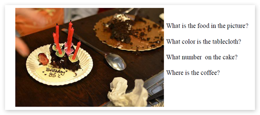</p>
		  <p align="justify">In this paper, we propose the first model to be able to generate diverse visually grounded questions given the same image. Visual question generation is an emerging topic which links textual questions with visual input. To the best of our knowledge, it lacks automatic methods to generate various and reasonable questions for the same visual input. So far, almost all the textual questions are generated manually, as well as the corresponding answers. To this end, we propose a system that automatically generates visually grounded questions. First, visual input is analyzed with deep caption model. Second, the captions along with VGG-16 features are used as input for our proposed question generator to generate visually grounded questions. Finally, to enable generating of versatile questions, a question type selection module is provided which selects reasonable question types and provide them as parameters for question generation. This is done using a hybrid LSTM with both visual and answer input. Our system is trained using VQA and Visual7W dataset and shows reasonable results on automatically generating of new visual questions. We also propose a quantitative metric for automatic evaluation of the question quality.</p>
		  <p><a href="../Downloads/Shijie_VQG_IJCAI2017.pdf">Paper</a> (1.4 MB) </p>
		  <p>&nbsp;</p>
		  <p>&nbsp;</p>
		  <p class="STYLE3">A solution for efficient viewpoint space  partition in 3D object recognition</p>
		  <p>Oral presentation in ICIG2009</p>
		  <p> Xiao Yu, <a href="http://oa.ee.tsinghua.edu.cn/~mahuimin/index.htm">Huimin Ma</a>, <strong>Shaodi You</strong> and Ze Yuan</p>
		  <p></p>
		  <p align="justify">Viewpoint Space Partition based on Aspect Graph is one of the core techniques of 3D object recognition. Projection images obtained from critical viewpoint following this approach can efficiently provide topological information of an object. Computational complexity has been a huge challenge for obtaining the representation viewpoints used in 3D recognition. In this paper, we discuss inefficiency of calculation due to redundant nonexistent visual events; propose a systematic criterion for edge selection involved in EEE events. Pruning algorithm based on concave-convex property is demonstrated. We further introduce intersect relation into our pruning algorithm. These two methods not only enable the calculation of EEE events, but also can be implemented before viewpoint calculation, hence realizes view-independent pruning algorithm. Finally, analysis on simple representative models supports the effectiveness of our methods. Further investigations on Princeton Models, including airplane, automobile, etc, show a two orders of magnitude reduction in the number of EEE events on average.</p>
		  <p align="justify"><a href="../Downloads/ShaodiYOU-ICIG2009.pdf">Paper</a> (0.5MB)</p>
		  <p align="justify">&nbsp;</p>
		  <p align="justify">&nbsp;</p>
		  <p align="justify">&nbsp;</p>
		  <p align="justify" class="STYLE3">Deep Clurstering for Weakly-Supervised Semantic  Segmentation in Complex Object Clustered Scenes</p>
		  <p align="justify">arXiv preprint </p>
		  <p align="justify">Xiang Wang, Huimin Ma and <strong>Shaodi You</strong></p>
		  <p align="justify"> Weakly-supervised semantic segmentation under image tags 
		    supervision has drawn lots of attention in recent years. In simple scenes, 
		    such as Pascal VOC dataset, only one or few objects are presented in 
		    images, so the class labels contain signicant information for localizing objects. However, in complex real-world scenes, such as autonomous 
		    driving scenes, the problem becomes much more challenging. Almost all 
		    object classes are presented in every single image and thus the class la
		    bels contain hardly any information for supervising networks. To address 
		    this issue, in this paper, rst, we propose to take advantages of ImageNet 
		    dataset to train a discriminative classication network and apply it to 
		    our complex scenes to produce initial object localization. Second, in autonomous driving scenes, though the images are much more complex, we 
		    argue that objects within the same class have more similarities as all im<br>
		    ages in the dataset have a very similar scene. Motivated by this, we pro
		    pose an iterative deep clustering method using the initial localization as
		    guidance information to cluster and mine object regions. The mined ob
		    ject regions are then used to supervise the segmentation networks. To our 
		    best knowledge, it is the rst time that weakly-supervised semantic seg
		    mentation can be applied in complex autonomous driving datasets with
		    still images. Experimental results on Cityscapes and CamVid datasets
		    demonstrate the proposed method outperforms previous state-of-the-art
		    weakly-supervised method which uses additional optical 
	      ow of videos.</p>
		  <p align="justify">Paper<br>
		  Webpage</p>
		  <p align="justify">&nbsp;</p>
		  <p align="justify">&nbsp;</p>
		  <p align="justify" class="STYLE3">Differentiating Objects by Motion: 
	      Joint Detection and Tracking of Small Flying Objects</p>
		  <p align="justify">arXiv preprint </p>
		  <p align="justify">Ryota  Yoshihashi, Tinh Tuan, Rei Kawakami, <strong>Shaodi You</strong>, Makoto Iida and Takeshi  Naemura</p>
		  <p align="justify">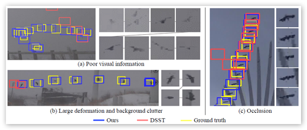</p>
		  <p align="justify">While generic object detection has achieved large improvements 
		    with rich feature hierarchies from deep nets, 
		    detecting small objects with poor visual cues remains challenging. 
		    Motion cues from multiple frames may be more informative 
		    for detecting such hard-to-distinguish objects in 
		    each frame. However, how to encode discriminative motion 
		    patterns, such as deformations and pose changes that characterize 
		    objects, has remained an open question. To learn 
		    them and thereby realize small object detection, we present 
		    a neural model called the Recurrent Correlational Network, 
		    where detection and tracking are jointly performed over a 
		    multi-frame representation learned through a single, trainable, 
		    and end-to-end network. A convolutional long shortterm 
		    memory network is utilized for learning informative 
		    appearance change for detection, while learned representation 
		    is shared in tracking for enhancing its performance. 
		    In experiments with datasets containing images of scenes 
		    with small flying objects, such as birds and unmanned aerial 
		    vehicles, the proposed method yielded consistent improvements 
		    in detection performance over deep single-frame detectors 
		    and existing motion-based detectors. Furthermore, 
		    our network performs as well as state-of-the-art generic object 
		    trackers when it was evaluated as a tracker on the bird 
	      dataset.</p>
		  <p align="justify">Paper<br>Webpage</p>
		  <p align="justify">&nbsp;</p>
		  <p align="justify">&nbsp;</p>
		  <p align="justify">&nbsp;</p>
		  <p align="justify" class="STYLE3">Top-down  Bottom-up Supervision Enhancement for Edge Detection</p>
		  <p align="justify">arXiv preprint</p>
		  <p align="justify">David Feng, <strong>Shaodi You</strong> and Nick Barnes </p>
		  <p align="justify">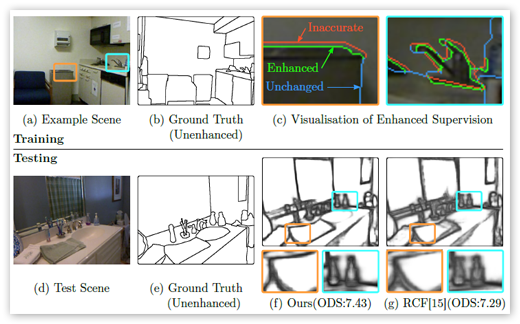</p>
		  <p align="justify">The performance of learned edge detectors depends 
		    heavily on both the quality and quantity of the training 
		    data. Existing high quality edge datasets are small, while 
		    larger datasets have inaccurate boundaries. We present a 
		    top-down bottom-up model for enhancing a noisy edge supervisory 
		    signal during training. Our approach applies a 
		    novel loss function for correcting a location-inaccurate supervisory 
		    signal using low-level image information. This 
		    loss function preserves the top-down information from the 
		    annotation while using bottom-up information to infer the 
		    exact location of the visual edge. We also introduce a strict 
		    supervision paradigm to explicitly enforce network layers to 
		    conform to the supervisory signal given the predominantly 
		    bottom-up nature of the task. Our approach enables existing 
		    edge detection systems to more effectively use the annotations 
		    from larger datasets with rough labels, obtaining improved 
		    results compared to state-of-the-art methods on the 
		    NYUD dataset, as well as showing effective cross-validation 
	      on SUNRGBD.</p>
		  <p align="justify">Paper</p>
		  <p align="justify">&nbsp;</p>
		  <p align="justify">&nbsp;</p>
		  <p align="justify" class="STYLE3">Salient  Structure: Validation through Eye-tracking and a Benchmark for Salient  Structure Detection</p>
		  <p align="justify">arXiv preprint</p>
		  <p align="justify">Weixuan Sun, <strong>Shaodi You</strong>, Janine  Walker, Kunming Li and Nick Barnes</p>
		  <p align="justify">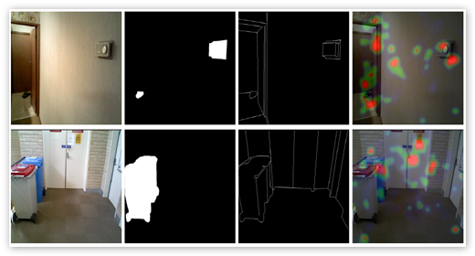</p>
		  <p align="justify">When humans look at a scene, they focus on some regions 
		    more than others. In general, humans pay attentions to some 
		    objects that stand out (salient objects) and also some important 
		    structures (salient structures). Salient structure play a key 
		    role for human to understand the environment, especially in 
		    navigation tasks. Recent saliency models have focused on 
		    detecting the most salient object, while detection of salient 
		    structure has attracted less attention. Thus, in this paper, our 
		    concept of salient structure is proposed. To validate our concept, 
		    we conduct a comprehensive eye tracking study which 
		    indicates that salient structure plays an important role in visual 
		    saliency. In addition, in this work, we collect the first 
		    available dataset for computer vision tasks in salient structure 
		    detection. The dataset contains 200 images. Finally, a benchmark 
		    is introduced to assist measuring performance of future 
	      salient structure detection models.</p>
		  <p align="justify">Paper<br>Webpage</p>
		  <p align="justify">&nbsp;</p>
		  <p align="justify">&nbsp;</p>
		  <p align="justify">&nbsp;</p>
		  <p align="justify">&nbsp;</p>
		  <p align="justify" class="STYLE3">Cross-connected Networks for Multi-task 
	      Learning of Detection and Segmentation</p>
		  <p align="justify">arXiv preprint </p>
		  <p align="justify"><span data-bind="text: fullName, style:{fontWeight: isPrimary ? 'bold' : ''}">Seiichiro Fukuda</span>, <span data-bind="text: fullName, style:{fontWeight: isPrimary ? 'bold' : ''}">Ryota Yoshihashi</span>, Rei Kawakami, <strong>Shaodi You</strong>, <span data-bind="text: fullName, style:{fontWeight: isPrimary ? 'bold' : ''}">Makoto Iida</span> and <span data-bind="text: fullName, style:{fontWeight: isPrimary ? 'bold' : ''}">Takeshi Naemura</span></p>
		  <p align="justify">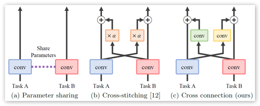</p>
		  <p align="justify">	      Multi-task learning improves generalization performance by sharing knowledge among related tasks. Existing models are for task combinations annotated on the same dataset, while there are cases where multiple datasets are available for each task. How to utilize knowledge of successful single-task CNNs that are trained on each dataset has been explored less than multi-task learning with a single dataset. We propose a cross-connected CNN, a new architecture that connects single-task CNNs through convolutional layers, which transfer useful information for the counterpart. We evaluated our proposed architecture on a combination of detection and segmentation using two datasets. Experiments on pedestrians show our CNN achieved a higher detection performance compared to baseline CNNs, while maintaining high quality for segmentation. It is the first known attempt to tackle multi-task learning with different training datasets between detection and segmentation. Experiments with wild birds demonstrate how our CNN learns general representations from limited datasets.</p>
		  <p align="justify">Paper<br>Webpage</p>
		  <p align="justify">&nbsp;</p>
		  <p align="justify">&nbsp;</p>
		  <p align="justify">&nbsp;</p>
		  <p align="justify">&nbsp;</p>
		  <p align="justify">&nbsp;</p>
		  <p align="justify" class="STYLE3">&nbsp;</p></td>
		<td rowspan="4">
			</td>
		<td rowspan="4" width="20" background="../images/index_07.gif">&nbsp;</td>
	</tr>
	<tr>
		<td width="175" height="53" style="table-layout:fixed>
			<a href="Html/CV.html"><p><a href="CV.html"></a><a href="Research.html"></a></a></p>	    </td>
	</tr>
	<tr>
		<td width="175" height="53">
			<a href="Publication.html"></a><a href="Artworks.html"></a></td>
	</tr>
	<tr>
		<td><p>&nbsp;</p>
		  <p>&nbsp;</p>
		  <p>&nbsp;</p>
		  <p>&nbsp;</p>
		  <p>&nbsp;</p>
		  <p>&nbsp;</p>
		  <p>&nbsp;</p>
		  <p>&nbsp;</p>
		  <p>&nbsp;</p>
		  <p>&nbsp;</p>
		  <p>&nbsp;</p>
		  <p>&nbsp;</p>
		  <p>&nbsp;</p>
		  <p>&nbsp;</p>
		  <p>&nbsp;</p>
		  <p>&nbsp;</p>
		  <p>&nbsp;</p>
		  <p>&nbsp;</p>
		  <p>&nbsp;</p>
		  <p>&nbsp;</p>
		  <p>&nbsp;</p>
		  <p>&nbsp;</p>
		  <p>&nbsp;</p>
		  <p>&nbsp;</p>
		  <p>&nbsp;</p>
		  <p>&nbsp;</p>
		  <p>&nbsp;</p>
		  <p>&nbsp;</p>
		  <p>&nbsp;</p>
	    <p>&nbsp;</p>
	    <p>&nbsp;</p>
	    <p>&nbsp;</p>
	    <p>&nbsp;</p>
	    <p>&nbsp;</p>
	    <p>&nbsp;</p>
	    <p>&nbsp;</p>
	    <p>&nbsp;</p>
	    <p>&nbsp;</p>
	    <p>&nbsp;</p>
	    <p>&nbsp;</p>
	    <p>&nbsp;</p>
	    <p>&nbsp;</p>
	    <p>&nbsp;</p>
	    <p>&nbsp;</p>
	    <p>&nbsp;</p>
	    <p>&nbsp;</p>
	    <p>&nbsp;</p>
	    <p>&nbsp;</p>
	    <p>&nbsp;</p>
	    <p>&nbsp;</p>
	    <p>&nbsp;</p>
	    <p>&nbsp;</p>
	    <p>&nbsp;</p>
	    <p>&nbsp;</p>
	    <p>&nbsp;</p>
	    <p>&nbsp;</p>
	    <p>&nbsp;</p>
	    <p>&nbsp;</p>
	    <p>&nbsp;</p>
	    <p>&nbsp;</p>
	    <p>&nbsp;</p>
	    <p>&nbsp;</p>
	    <p>&nbsp;</p>
	    <p>&nbsp;</p>
	    <p>&nbsp;</p>
	    <p>&nbsp;</p>
	    <p>&nbsp;</p>
	    <p>&nbsp;</p>
	    <p>&nbsp;</p>
	    <p>&nbsp;</p>
	    <p>&nbsp;</p>
	    <p>&nbsp;</p>
	    <p>&nbsp;</p>
	    <p>&nbsp;</p>
	    <p>&nbsp;</p>
	    <p>&nbsp;</p>
	    <p>&nbsp;</p>
	    <p>&nbsp;</p>
	    <p>&nbsp;</p>
	    <p>&nbsp;</p>
	    <p>&nbsp;</p>
	    <p>&nbsp;</p>
	    <p>&nbsp;</p>
	    <p>&nbsp;</p>
	    <p>&nbsp;</p>
	    <p>&nbsp;</p>
	    <p>&nbsp;</p>
	    <p>&nbsp;</p>
	    <p>&nbsp;</p>
	    <p>&nbsp;</p>
	    <p>&nbsp;</p>
	    <p>&nbsp;</p>
	    <p>&nbsp;</p>
	    <p>&nbsp;</p>
	    <p>&nbsp;</p>
	    <p>&nbsp;</p>
	    <p>&nbsp;</p>
	    <p>&nbsp;</p>
	    <p>&nbsp;</p>
	    <p>&nbsp;</p>
	    <p>&nbsp;</p>
	    <p>&nbsp;</p>
	    <p>&nbsp;</p>
	    <p>&nbsp;</p>
	    <p>&nbsp;</p>
	    <p>&nbsp;</p>
	    <p>&nbsp;</p>
	    <p>&nbsp;</p>
	    <p>&nbsp;</p>
	    <p>&nbsp;</p>
	    <p>&nbsp;</p>
	    <p>&nbsp;</p>
	    <p>&nbsp;</p>
	    <p>&nbsp;</p>
	    <p>&nbsp;</p>
	    <p>&nbsp;</p>
	    <p>&nbsp;</p>
	    <p>&nbsp;</p>
	    <p>&nbsp;</p>
	    <p>&nbsp;</p>
	    <p>&nbsp;</p>
	    <p>&nbsp;</p>
	    <p>&nbsp;</p>
	    <p>&nbsp;</p>
	    <p>&nbsp;</p>
	    <p>&nbsp;</p>
	    <p>&nbsp;</p>
	    <p>&nbsp;</p>
	    <p>&nbsp;</p>
	    <p>&nbsp;</p>
	    <p>&nbsp;</p>
	    <p>&nbsp;</p>
	    <p>&nbsp;</p>
	    <p>&nbsp;</p>
	    <p>&nbsp;</p>
	    <p>&nbsp;</p>
	    <p>&nbsp;</p>
	    <p>&nbsp;</p>
	    <p>&nbsp;</p>
	    <p>&nbsp;</p>
	    <p>&nbsp;</p>
	    <p>&nbsp;</p>
	    <p>&nbsp;</p>
	    <p>&nbsp;</p>
	    <p>&nbsp;</p>
	    <p>&nbsp;</p>
	    <p>&nbsp;</p>
	    <p>&nbsp;</p>
	    <p>&nbsp;</p>
	    <p>&nbsp;</p>
	    <p>&nbsp;</p>
	    <p>&nbsp;</p>
	    <p>&nbsp;</p>
	    <p>&nbsp;</p>
	    <p>&nbsp;</p>
	    <p>&nbsp;</p>
	    <p>&nbsp;</p>
	    <p>&nbsp;</p>
	    <p>&nbsp;</p>
	    <p>&nbsp;</p>
	    <p>&nbsp;</p>
	    <p>&nbsp;</p>
	    <p>&nbsp;</p>
	    <p>&nbsp;</p>
	    <p>&nbsp;</p>
	    <p>&nbsp;</p>
	    <p>&nbsp;</p>
	    <p>&nbsp;</p>
	    <p>&nbsp;</p>
	    <p>&nbsp;</p>
	    <p>&nbsp;</p>
	    <p>&nbsp;</p>
	    <p>&nbsp;</p>
	    <p>&nbsp;</p>
	    <p>&nbsp;</p>
	    <p>&nbsp;</p>
	    <p>&nbsp;</p>
	    <p>&nbsp;</p>
	    <p>&nbsp;</p>
	    <p>&nbsp;</p>
	    <p>&nbsp;</p>
	    <p>&nbsp;</p>
	    <p>&nbsp;</p>
	    <p>&nbsp;</p></td>
	</tr>
	<tr>
		<td colspan="6">
			</td>
	</tr>
</table>
<!-- End Save for Web Slices -->
</body>
</html>